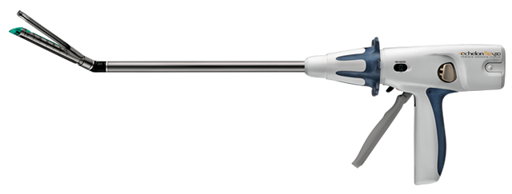
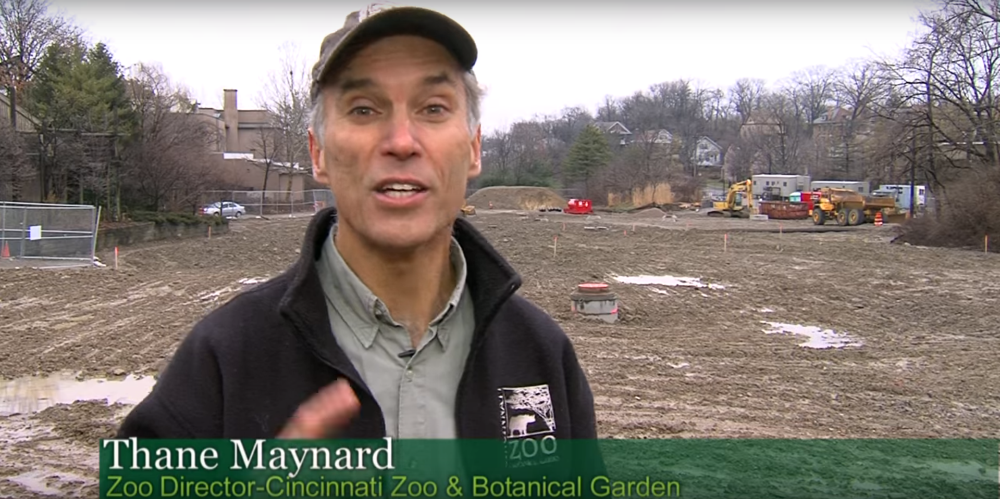
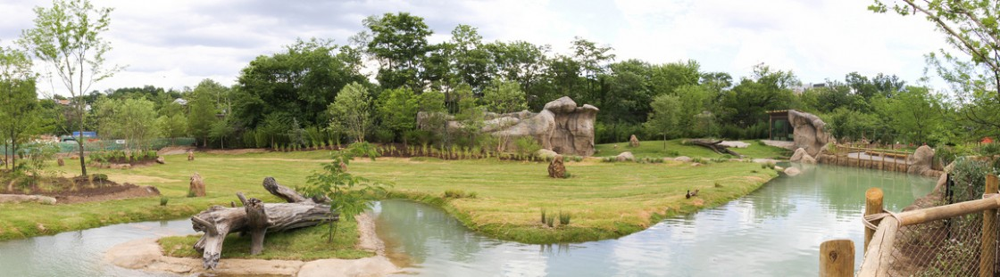

Kinetic Vision
Software Engineer / Summer and Winter Semester - 2015
At Kinetic Vision, I worked the 2015 Summer and Winter semesters of as a software engineer and team manager designing and producing several software suites and inhouse software. Kinetic Vision is an engineering consulting firm based in Cincinnati, Ohio. The first semester, I worked on a team maintaining and updating a software suite used by the medical industry to catagorize medical staple's quality. The software is propratory so I can not share visuals, but the device which delivers the staples is shown below.

I also had the opportunity to develop a solo project which analyzed accelerometer data and generated a report from it. At the end of the semester, I helped design and implement the beginning of a new software suite which generated 3D data for STL printers from a 2D input image. The second semester, I primarily worked on the aforementioned software suite. This semester included the first client software release, subsequent bug fixes and new feature development for the client. I acted as the head programmer, helping to lead the team on feature releases, managing of the git repo, and bug fixes.
Cincinnati Zoo
Gardner / January - August of 2013
My time at the Cincinnati Zoo was my introduction to the working world. I worked there during my transfer from the Biochemistry program to the Computer Science program. When I arrived they had just begun construction on the lion and plains portion of their new Africa exhibit. It was a giant mud pit with a lot of work needed from the horticulture team. Below is a visual, looking over the open plains exhibit, demonstrating the state it was in at the time I joined the team.

As I joined mid-winter, the beginning of my time at the zoo was spent clearing paths, preparing seedlings to be planted and inventorying plants. Spring was mild that season and summer came in full force rather quickly. During summer, my mornings primarily consisted of watering the Africa exhibit. Afterwards, I would join a horticulture team and either landscape, plant, clean or inventory. It was a different experience every day. One of the more interesting skills I learned was how to lay sod for the new exhibits. It was amazing how once laid it transformed an exhibit from dirt to something tangible. I unfortunately don't have any progress pictures of the exhibit but the image below is what it looked like as I was leaving. Thane in the picture above is standing about where the rock in the center of the image is in the photo below.

I really enjoyed my time at the Cincinnati Zoo. It was a great professional experience where I learned and worked with a lot of knowledgeable people. I gained a large collection of knowledge and experience that would be hard to obtain elsewhere.